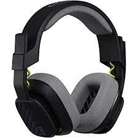

Over-Ear
On-Ear


Un auricular es un transductor que recibe una señal eléctrica originada desde una fuente electrónica (como por ejemplo una radio, sintoamplificador o reproductor de audio) y que por su diseño permite colocar cerca de los oídos unos altavoces para generar ondas sonoras audibles.
En el mundo de la tecnología sin cable los audífonos inalámbricos se han posicionado muy bien entre los consumidores. Estos dispositivos permiten escuchar el sonido originado de algún dispositivo como un teléfono celular o computador, sin necesidad de estar conectado a dicho dispositivo por medio de un cable. La libertad que la tecnología inalámbrica brinda es una de las características más atractivas de estos accesorios, lo que ha incrementado la demanda por parte de los usuarios y ha impulsado el diseño de diversos modelos, generando de esta forma varios tipos de auriculares inalámbricos.
Por lo general, se pueden emparejar varios dispositivos con los audífonos, de modo que se puede cambiar fácilmente entre diferentes dispositivos. Por ejemplo, puedes estar conectado a tu teléfono móvil mientras transmites una película desde tu tableta. En caso de una llamada entrante, se interrumpirá la película de tu tableta para ofrecerte la señal de audio de tu teléfono.
Una de las ventajas de la tecnología Bluetooth es la personalización. Puedes disfrutar de una experiencia auditiva personalizada, y tú controlas todos los ajustes. Los audífonos no sólo funcionan como audífonos inalámbricos y te ofrecen una experiencia de manos libres, sino que están diseñados para adaptarse a tus necesidades auditivas únicas. Cualquier audio que se transmita a tus dispositivos a través de la tecnología Bluetooth se personalizará para adaptarse a tu pérdida auditiva, ofreciéndote la mejor calidad de sonido. Si necesitas el volumen más alto en un oído, o necesitas más amplificación de los sonidos altos en el otro, la música que se transmita a tus oídos se adaptará a tus necesidades auditivas.
A diferencia del WiFi, las señales de Bluetooth son muy estables, lo que significa que el audio no se cortará cuando estés transmitiendo. La transmisión directa al auricular también reduce la retroalimentación ruidosa.
Los audífonos Bluetooth son binaurales, lo que significa que los audífonos se comunican entre sí. Por ejemplo, podrás escuchar las conversaciones telefónicas en ambos oídos en lugar de en uno solo. La tecnología binaural también te ayuda a localizar la fuente del habla, lo que resulta en una experiencia auditiva más natural.
Por lo general los audífonos tienen funciones de controles remotos que permiten cambiar el volumen o el programa de forma remota, entre otras funcionalidades. Será el profesional audioprotesista quien de forma remota podrá ofrecerte un servicio de asistencia a distancia. Sin necesidad de acudir al centro auditivo, lo cual es una gran ventaja, por comodidad y, sobre todo, en el momento en el que estamos viviendo con el COVID-19, por reducir el contacto.